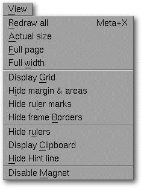

<!-- Documentation XQuad (c)1995-2000 AXENE contact axene@axene.org>
<html>

<head>
<title>View Menu</title>
</head>

<body BGCOLOR="#FFFFFF" BACKGROUND="Images/back.gif" TEXT="#000000">

<p ALIGN="right">  </p>

<p><br>
<br>
The <i>View</i> menu accesses commands to alter various aspects of the display interface.</p>

<p>Many commands on this menu are part of a pair. These commands vary according to
context; for example, if the status bar were displayed, an entry on this menu would be
&quot;<i>Hide status bar</i>&quot;, but if the bar were not displayed, the command would
read &quot;<i>Display status bar</i>&quot;.<br>
<br>
</p>

<hr>

<p align="center"><br>
 <br>
<small><i>Screen snap: View pulldown menu</i></small></p>

<p><br>
</p>

<hr>

<p><br>
</p>

<h3>The View menu contains the following options:</h3>

<ul>
  <li><a NAME="redraw_menu_entry">&quot;<i>Redraw All</i>&quot; let you <b>refresh the display
    of the active spreadsheet</b>. This can be useful to discard drawing bugs, so try it
    whenever something seems wrongly displayed.</a><br>
    &nbsp;</li>
  <li><a NAME="grid_menu_entry">quot;<i>Display/Hide Grid</i>&quot; let <b>you activate or
    deactivate the drawing of the cell grid</b>. The cell grid is made up of all the
    horizontal and vertical lines separating the cells. By default, the cell grid is not
    printed.</a><br>
    &nbsp;</li>
  <li><a NAME="frame_border_menu_entry">&quot;<i>Display/Hide Frames Borders</i>&quot; let you
    <b>activate or deactivate the drawing of the borders having a null width</b>. It can be
    useful when you have to deal with several superposed transparent border-less frames and
    you need to view their positions. On the other hand, deactivating the displaying of the
    borders having a null width can give you a more realistic rendering of the printed
    document.</a><br>
    &nbsp;</li>
  <li><a NAME="hint_line_menu_entry">&quot;<i>Display/Hide Status Bar</i>&quot; let you <b>activate
    or deactivate the status bar</b>. The status bar gives basic information on used and on
    functions of menu-bar buttons.</a><br>
    &nbsp;</li>
  <li><a NAME="column_headers_menu_entry">&quot;<i>Display/Hide Columns Headers</i>&quot; let <b>you
    activate or deactivate the drawing of the columns headers</b>. Columns headers is made of
    the first line of the spreadsheet, containing the coordinates of the columns in form of
    letters (A, B, C ... AA, AB, ...).</a><br>
    &nbsp;</li>
  <li><a NAME="row_headers_menu_entry">&quot;<i>Display/Hide Lines Headers</i>&quot; let <b>you
    activate or deactivate the drawing of the lines headers</b>. Columns headers is made of
    the first column of the spreadsheet, containing the coordinates of the lines in form of
    numbers.</a><br>
    &nbsp;</li>
  <li><a NAME="page_separators_menu_entry">&quot;<i>Display/Hide Separators</i>&quot; let you <b>activate
    or deactivate the drawing of the page breaks marks</b>. Page breaks marks are made of
    horizontal and vertical dotted lines on some lines or columns borders, showing the paper
    cutout in printed sheets.</a><br>
    &nbsp;</li>
  <li><a NAME="formulas_menu_entry">&quot;<i>Display Formulas / Display Results</i>&quot; let
    you <b>select between the drawing of the formulas expressions or of the formulas results</b>.</a><br>
    &nbsp;</li>
  <li><a NAME="zeros_menu_entry">&quot;<i>Display/Hide Zeros</i>&quot; let you <b>activate or
    deactivate the drawing of null results</b>. This is useful to make cells having a null
    value or null formula result looks like empty cells.</a><br>
    &nbsp;</li>
  <li><a NAME="magnet_menu_entry">&quot;<i>Activate/Stop Magnetism</i>&quot; let you <b>activate
    or deactivate the to cells borders' attraction for frames</b>. Cells borders (cell grid)
    can be magnetic. Magnetism goes into action when you modify a frame position and the mouse
    pointer is attracted by magnetic lines. This can be useful when you need to deal with
    precise frame positioning.</a></li>
</ul>

<p><br>
</p>

<hr>

<p ALIGN="right"></p>
</body>
</html>
